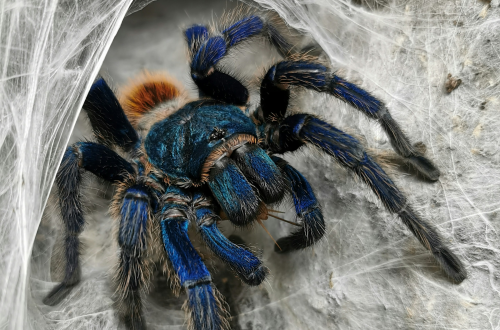
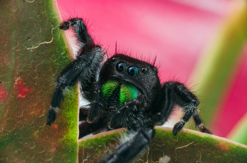
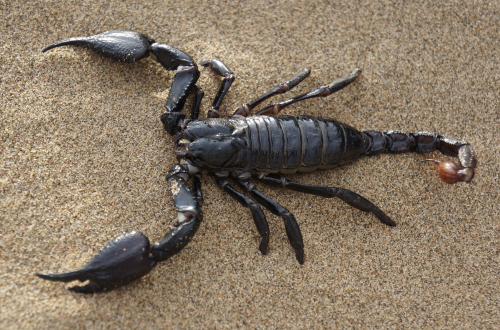
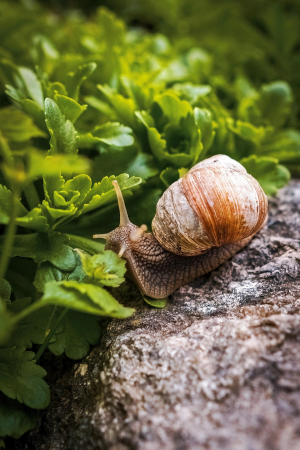
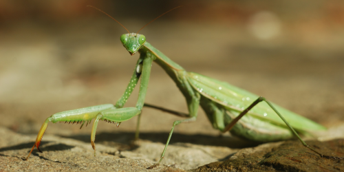

Critter Catching Guide: How to Locate and House Invertebrates
Introduction
Though unconventional, invertebrates such as spiders, isopods, and other insects make very fascinating (and low-maintenance) pets. This guide covers the basics for catching wild arthropods (and also land snails), and the general care requirements for each species group. For the most part, the critters you catch outside will thrive in a big jar filled with stuff you find in the backyard—so long as you maintain the right humidity, provide food, and ensure the jar is at room temperature. That being said, it’s still important to identify the animal, as they may have certain environmental conditions that need to be met to survive in captivity. For example, a snail needs higher humidity than a spider, and a praying mantis needs a tall enclosure because they molt by hanging upside down.
I should also note that many invertebrates have venom that poses a significant threat to humans, or they may have hairs or secrete a poison that is irritating to the skin. Before touching any arthropod, identify the species and ensure it’s safe. It’s also a good idea to know all of the dangerous animals local to your area, so that you know what to do if you happen to get bit.
To get started hunting invertebrates, you don’t really need anything other than knowledge on where to look, and a place to put the critters you catch—everything else can be found outside. There is equipment you can buy to make things easier, and to create a nicer looking setup, but this hobby doesn’t require any investment to enjoy it. I personally recommend getting a large net because it makes catching food for carnivorous arthropods much easier, but you can also buy reptile feeders from a local pet shop or online. Of course, that’s only necessary if you choose to keep an animal that feeds on live prey. Other than that, you need a spray bottle to mist the animals enclosure, and some kind of container to keep them in. Both of those you can likely find around your house—glass jars, plastic tubs, and tupperware are good options for cheap enclosures, all you need to do is to drill air holes.
For substrate, you can simply dig up some dirt from outside. To decorate the habitat, you can gather rocks, leaves, and sticks as well. However, I should mention that gathering materials from outside runs the risk of bringing unwanted guests like ants or parasites, so some people will bake the things they find outside in the oven to sterilize them. You can also buy supplies from a pet store, which is what I personally do. Coco-coir is relatively cheap, and it maintains humidity and support burrows better than the loose dirt outside of my home.
With that general advice out of the way, the following sections will go into a little more detail on the requirements of each commonly kept group of invertebrates, and how they are as pets.
Critter Categories
Arachnids



Though spiders are what most people think of when hearing the term "arachnid", but it actually describes any arthropod that has eight legs, two body sections, and lack antennae. This includes spiders, of course, tarantulas, scorpions, vinegaroons, and even harvestmen, mites, and ticks. Obviously nobody is keeping the latter three as pets, but tarantulas, spiders, and scorpions are all incredibly common in the hobby--and for good reason, it's always exciting to watch arachnids hunt, and they usually only need to be fed a few times a week at most.
They will only eat live prey, which means you either need to catch crickets, flies, or other small insects yourself, or purchase them from the store. The majority of arachnids are nocturnal, and in general aren't very active unless they can sense food nearby, so you likely won't see them often outside of meal times. Arachnids will usually thrive at room temperature, but some tropical species prefer warmer temperatures and may require a heat source.
Most arachnids have some form of venom, and though most aren't medically significant they generally shouldn't be handled (even though many species are reluctant to bite or sting, there's always a chance). Bites can be quite painful depending on the species, and you may accidently throw and kill your pet in suprise. Arachnids are not interactive pets; they don't enjoy human interaction like a cat or dog, and handling them may cause unnecessary stress. Tarantulas specifically are also very fragile and a drop of even a few feet will kill them. Arachnids as a whole can also move quite fast when startled, so they tend to be easy to drop.
Isopods, Millipedes, & Snails

Isopods, millipedes, and snails are very different from eachother, yet they are often found together in the wild because they prefer the same damp, dark environments. Isopods, millipedes, and snails all feed on decaying plant and animal waste and will eat pretty much anything. Unlike arachnids, they are harmless (technically anything with a mouth can bite, but it's extremely unlikely to happen and won't hurt much anyway). They also usually aren't very fast, so there's nothing wrong with handling these guys as long as your careful. Many people actually keep all three of these animals together in a terrarium, but there are some risks in doing so.
Isopods and snails can be kept together with no problem, and adding isopods to a snail enclosure can be very beneficial because isopods will clean up waste left by the snails. Snails and millipedes can cohabitate as well, however, millipedes can secrete an irritating toxin when stressed which could potentially harm the snail (I haven't heard of this being an issue though). I don't recommend keeping isopods and millipedes together, even though many people have done so with no issues, because isopods will eat millipedes while they molt. This can cause serious damage to the millipede and even kill them. If you have a large enough enclosure and provide plenty of food, it would likely be fine to keep isopods and millipedes together, but I personally don't think it's worth the risk.
As far as care goes, both isopods and snails need calcium. Many people provide cuttlebone or eggshells crushed into a powder to provide calcium, but in my experience they prefer the cuttlebone. All three are omnivores and need protein, which can be given with dead bugs, table scraps, fish flakes, dog food, et c. Millipedes, isopods, and snails can be fed nearly any vegetable and fruit, which should make up the bulk of their diet. Millipedes and isopods will also eat rotting leaves and wood.All three need high humidity and should be misted at least once per day. I recommend having a deep substrate to help maintain the moisture, and it's essential for millipedes because they burrow. Isopods prefer to hide underneath leaves and sticks, but snails will lay their eggs underground so they also benefit from a deeper substrate. Isopods, millipedes, and snails will be fine at room temperature.
Insects

Insects are invertebrates that have three body sections, six legs, and antennae. There are so many different species with different care requirements that I can't go into it here without discussing a specific insect. Most insects (around 75%) go through the four statges of metamorphosis (egg, larva, pupa, and adult), which makes them very interesting to raise. Beetles, praying mantis walking sticks, hissing cockroaches, and leaf insects are all popular choices. Ants are also fairly popular, but I definitely do not recommend keeping them without doing a ton of research (they are notorious escape artists).